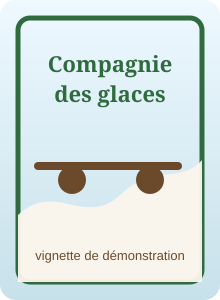

← Retour au portfolio
La Compagnie des glaces — résultat lisible
Cette page présente les 16 albums et 63 titres extraits de compagnie.xml.

Tome 1
La Compagnie des glaces, Intégrale 1
Sur une Terre envahie par les glaces, Lien Rag découvre les secrets des grandes compagnies ferroviaires.
Fiche Booknode
- La Compagnie des glaces
- Le Sanctuaire des glaces
- Le Peuple des glaces
- Les Chasseurs des glaces
Tome 2
La Compagnie des glaces, Intégrale 2
Lien Rag et son fils Jdrien deviennent des personnages centraux dans le monde glacé du rail.
Fiche Booknode
- L'Enfant des glaces
- Les Otages des Glaces
- Le Gnome halluciné
- La Compagnie de la Banquise
Tome 3
La Compagnie des glaces, Intégrale 3
Lien Rag entre en dissidence tandis que la Patagonie souffre du froid et de la faim.
Fiche Booknode
- Le Réseau de Patagonie
- Les Voiliers du rail
- Les Fous du soleil
- Cancer-Network
Tome 4
La Compagnie des glaces, Intégrale 4
Jdrien et ses compagnons se réfugient dans une Atlantide des glaces sous la banquise.
Fiche Booknode
- Station-Fantôme
- Les Hommes-Jonas
- Terminus Amertume
- Les Brûleurs de banquise
Tome 5
La Compagnie des glaces, Intégrale 5
Le Kid affronte la Compagnie de la Banquise tandis que Lien Rag cherche ses origines.
Fiche Booknode
- Le Gouffre aux garous
- Le Dirigeable sacrilège
- Liensun
- Les Éboueurs de la vie éternelle
Tome 6
La Compagnie des glaces, Intégrale 6
La disparition de Lien Rag relance les recherches dans un monde ferroviaire dangereux.
Fiche Booknode
- Les Trains-cimetières
- Les Fils de Lien Rag
- Voyageuse Yeuse
- L'Ampoule de cendres
Tome 7
La Compagnie des glaces, Intégrale 7
Les Rénovateurs du Soleil et les Sibériens s'affrontent dans un univers de banquise.
Fiche Booknode
- Sun Company
- Les Sibériens
- Le Clochard ferroviaire
- Les Wagons-mémoires
Tome 8
La Compagnie des glaces, Intégrale 8
Yeuse et Gus découvrent une station maudite et les secrets d'une ancienne locomotive.
Fiche Booknode
- Mausolée pour une locomotive
- Dans le ventre d'une légende
- Les Échafaudages d'épouvante
- Les Montagnes affamées
Tome 9
La Compagnie des glaces, Intégrale 9
Le monde des glaces devient instable tandis que Lien Rag et Kurts réapparaissent.
Fiche Booknode
- La Prodigieuse agonie
- On m'appelait Lien Rag
- Train spécial pénitentiaire 34
- Les Hallucinés de la voie oblique
Tome 10
La Compagnie des glaces, Intégrale 10
Les Aiguilleurs et le satellite S.A.S. deviennent au cœur des tensions.
Fiche Booknode
- L'Abominable postulat
- Le Sang des Ragus
- La Caste des Aiguilleurs
- Les Exilés du ciel croûteux
Tome 11
La Compagnie des glaces, Intégrale 11
Le dégel commence et menace l'équilibre du monde ferroviaire.
Fiche Booknode
- Exode barbare
- La Chair des étoiles
- L'Aube cruelle d'un temps nouveau
- Les Canyons du Pacifique
Tome 12
La Compagnie des glaces, Intégrale 12
La fonte des glaces bouleverse la Compagnie de la Banquise et le destin du Kid.
Fiche Booknode
- Les Vagabonds des brumes
- La Banquise déchiquetée
- Soleil blême
- L'Huile des morts
Tome 13
La Compagnie des glaces, Intégrale 13
Les compagnons de Lien Rag croisent cargos, brouillards, icebergs et menaces pirates.
Fiche Booknode
- Les Oubliés de Chimère
- Les Cargos-Dirigeables du Soleil
- La Guilde des sanguinaires
- La Croix pirate
Tome 14
La Compagnie des glaces, Intégrale 14
La fonte oblige les humains à s'adapter à un monde nouveau et instable.
Fiche Booknode
- Le Pays de Djoug
- La Banquise de bois
- Iceberg-Ship
- Lacustra City
Tome 15
La Compagnie des glaces, Intégrale 15
La guerre s'étend en Patagonie et oppose les Harponneurs aux Hommes du Froid.
Fiche Booknode
- L'Héritage du Bulb
- Les Millénaires perdus
- La Guerre du Peuple du Froid
- Les Tombeaux de l'Antarctique
Tome 16
La Compagnie des glaces, Intégrale 16
La Terre sort de sa période glaciaire, mais l'avenir de l'humanité reste fragile.
Fiche Booknode
- La Charogne céleste
- L'Avenir des dupes
- Il était une fois la Compagnie des Glaces